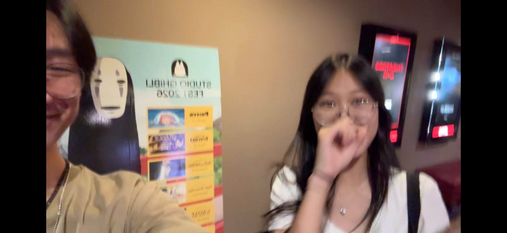
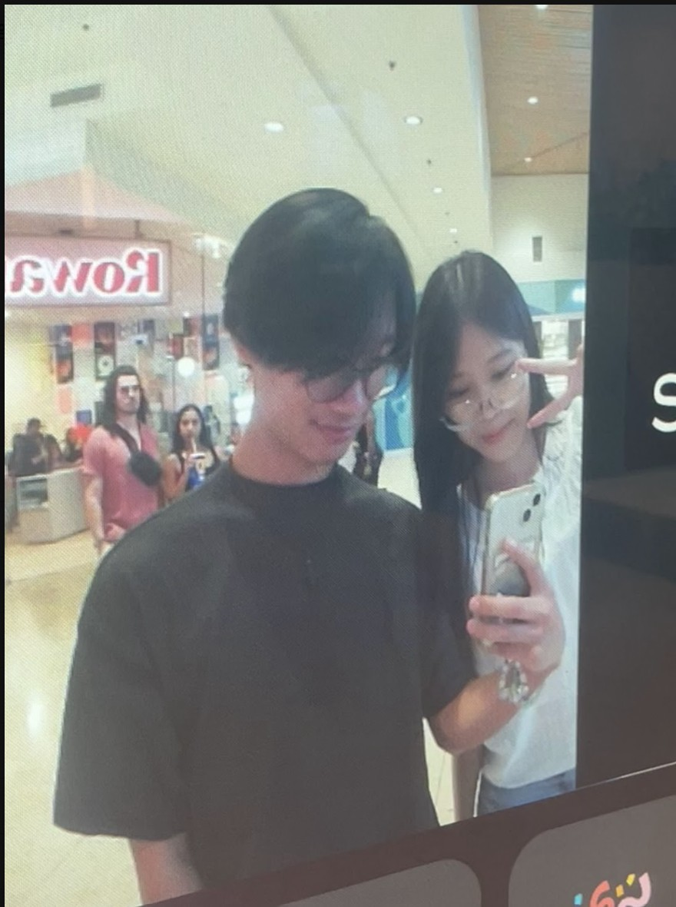
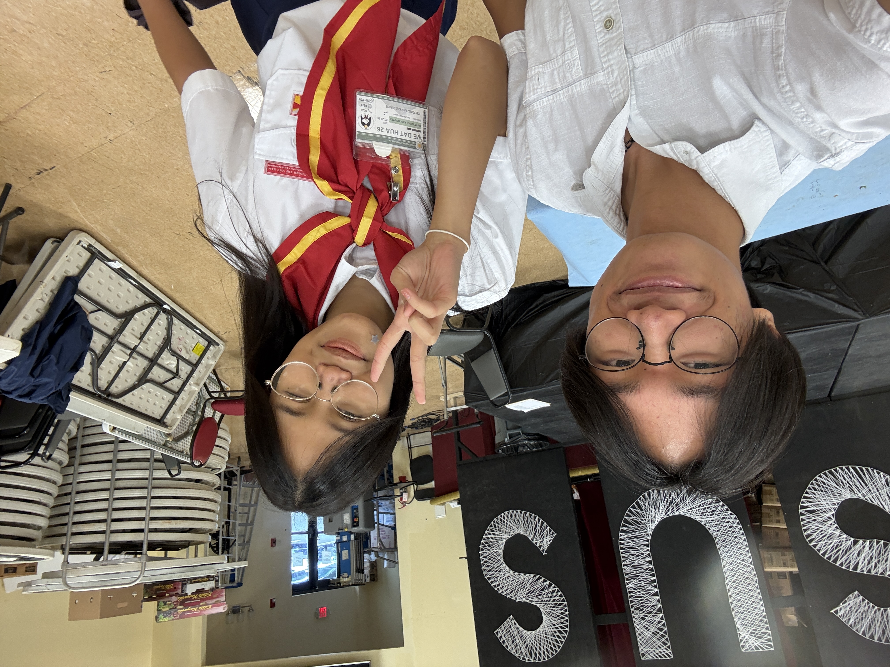

Chapter 1
Our beginning — the story of us.
How We First Talked (again)
The moment everything started, was on your instagram post, 'Coal for Christmas'. I meant it as a funny joke to comment on your post but then I thought you actually got mad at me :C.... ANYWAYS it was nice texting you again
Our First Hangout
The moment I knew I wanted more time with you. CHEESY WHATEVER, we played card games, got drinks, and talked but mostly played cards, and then you hated me but yk :c
Our Picnic
Ahhhhh our picnic, this was actually realy fun and I enjoyed the time we spent together here, We made clay thingies and my beautiful art, and uhmmm your chicken art or whatever, then some random people walked by and said we looked cute together and I said 'thank you' and you were like, what the heck why you say thank you, then i got sad. ANyways, this was also the day we got chiptole, and after I confessed that I liked you. And we hugged and yahhhhh then we had a couple of talks but uhmm... THATS FOR LATER.

Movies & Food
Ooohh super fun day, we watched 'Obesseion' very interesting first movie for both of us, I remember when you were like 'I can see why this is 18+' cause holy gore and uhmmmm Nikki kinda a stalker lowkey wtf. Anyways later we got food at Alley 51 we got the good eats and then yah.

A Moment I'll Never Forget
ahem, this was the night where we had our first argument where basicaly you told me everything that you felt was going on and how things werent going the way they should be going, I took some time to think about it and wanted to change for you, because I care about you and should have done these things sooner. We talked again and things have hopefully been going well after???.
Our First Date
YESSSSSSS!!!! SHE SAID YESS!!!!! ahemmm sorry got excited. This was our first date and hopefully many more to come, we first went to Doans where we both got com thuc nung right right right or com tam MAN VIETNAMESE IS HARD RAHHHHHH. anyways food was pretty good ngl, then after you saw the flowers I made you, hopefully you liked it, cause fun fact I didnt know you disliked sunflowers ahahahahahaha....... :c jk i didnt know and this is a fun learning opportunity for me. You also were given 1 chicken per stop we did and I completely forgot all their names except, riley and honey i think. We also went to a thrift place, kohls, the micro center, and the mall where we took the photo you see now. SUPER FUNN DAY

Your Promotion
I was so proud of you this day. Never thought I would see you promote tbh, but after seeing you do all the hard work for registration committee and even being HEAD OF IT crazyyyyyy, I was really proud of all the hard work you put in. Despite you hating it supposedly, I think you had some sort of fun with your creative mind making these supa cool nametags. I honeslty liked them a lot and thought it was something completely different. And that different makes it really cool I feel like. Anyways I see all the hard work you put in and that inspires me to do the same, Imma be higher rank than you soon enough.

Three Songs That Remind Me of You
Song 1
Song 2
Song 3